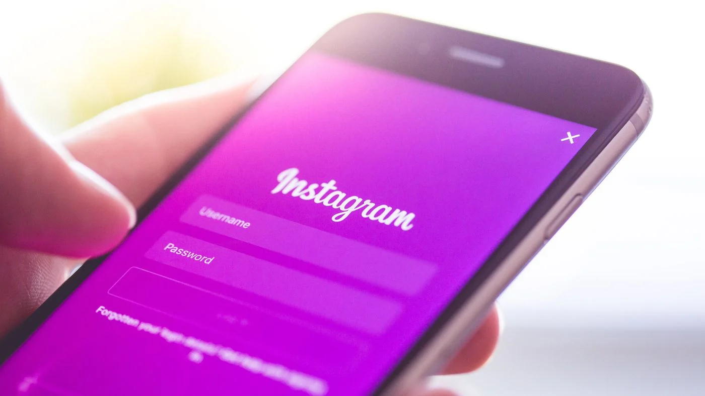
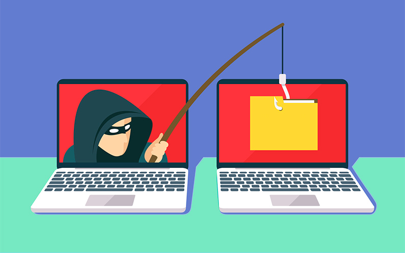
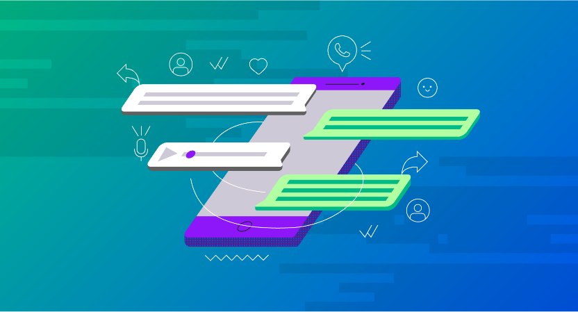
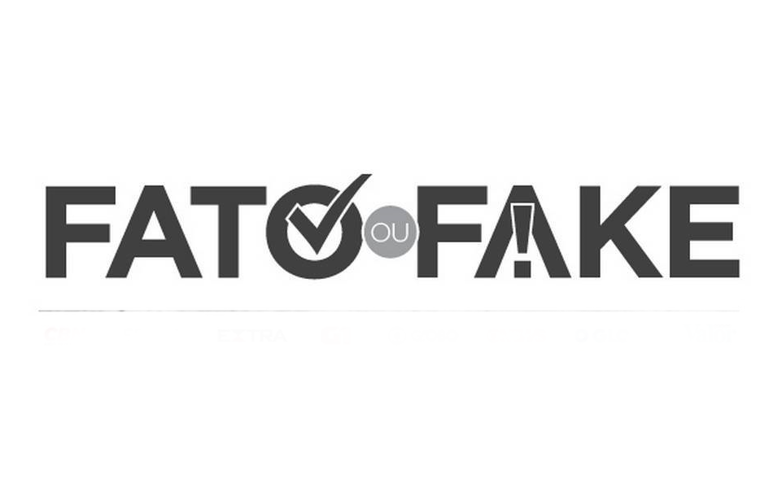
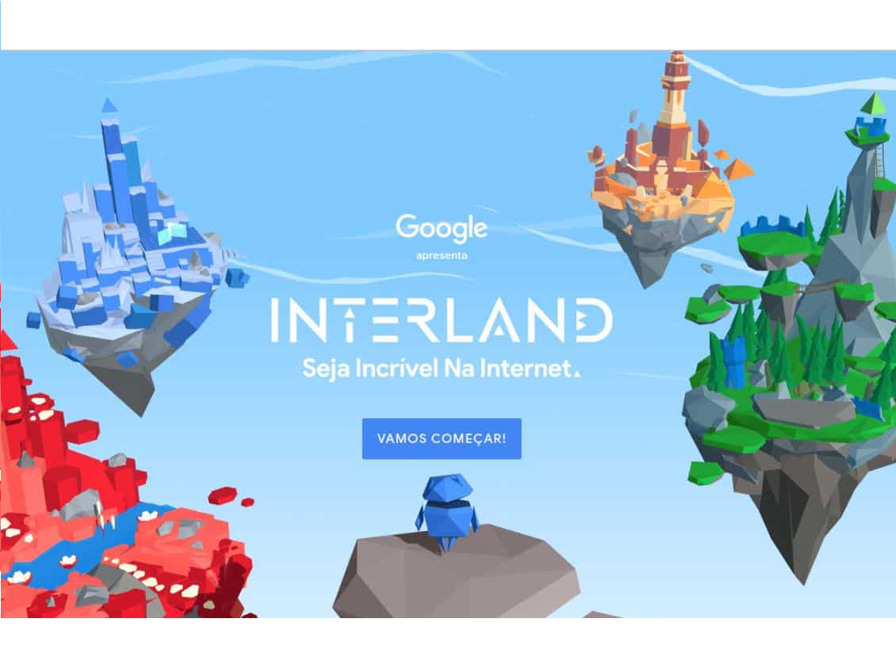

Leia e se proteja

A ferramenta de verificação de duas etapas, no Instagram, permite que o usuário se proteja de possíveis tentativas de "hackeamento", dessa maneira, caso alguém tente entrar na sua conta, o Instagram pede que esse criminoso informe um código que será enviado para o celular cadastrado pelo usuário, impossibilitando, desse modo, a invasão da conta.
Verificação de duas etapas
A ferramenta de verificação de duas etapas, no Instagram, permite que o usuário se proteja de possíveis tentativas de "hackeamento", dessa maneira, caso alguém tente entrar na sua conta, o Instagram pede que esse criminoso informe um código que será enviado para o celular cadastrado pelo usuário, impossibilitando, desse modo, a invasão da conta.

Formas de se proteger do Phishing
O Phishing é uma tática bastante utilizada para roubo de dados, no entanto, ainda é desconhecida para a maioria da população. Tal tática consiste principalmente no envio de e-mails com links suspeitos, no quais são pedidos informações pessoais do usuário, o remetente faz com que pareça ser de uma instituição séria, como um banco, facilitando com que o usuário caia no golpe .

Como evitar clonagem do WhatsApp
O WhatsApp, aparentemente, para muitas pessoas é uma rede social segura por não precisar informar dados como CPF ou RG, e por não precisar realizar um loggin diariamente, no entanto, tal plataforma tem sido cada vez mais, um alvo para criminosos, uma vez que seria uma maneira mais "fácil" de se passar pelo dono real da conta, e com isso, pedir dinheiro aos conhecidos.
Perigos da alta exposição nas redes
A reportagem, realizada pelo Fantático, tem o objetivo de mostrar como as pessoas estão vulneráveis tamtp éla extrema exposicão nas redes sociais quanto por não utilizarem as ferramentas de segurança disponíveis, tal como optar pelo modo de privatização do perfil, restringindo informações importates à quem realmente o usuário realmente possue um vínculo de amizade.
Dicas para senhas fortes e seguras
Uma senha forte é extremamente importante para dificultar o processo daqueles que tentam invadir uma conta. Desse modo, essa matéria trás dicas de como fortalecer as suas senhas, assim como trás dicas também sobre o uso do celular, fala um pouco sobre o que fazer em relação ao cyberbullying, utilização de aplicativos desconhecidos, compras on-line e serviços bancários.
Ferramentas de Privacidade
Manter a privacidade é essencial tanto para evitar a exposição de informações pessoais para pessoas desconhecidas quanto para dificultar o roubo de alguma de suas contas. Dessa maneira, essa página tem como objetivo informar como utilizar as ferramentas de privacidade presentes em serviços e aplicativos populares, como WhatsApp, Instagram e Twitter.
Ferramentas para ajudar a proteger seus dados no meio virtual

Internet Segura
Internet segura é uma ferramenta que possibilita o aprendizado para pessoas de qualquer faixa etária sobre como utilizar a internet de maneira correta, os perigos presentes nas redes e como evitá-los, manuais de como realizar compras "on-line", além de atividades lúdicas para crianças.

Fato ou Fake
Fato ou Fake, ferramenta criada pela empresa Meedan, é um bot no WhatsApp que permite, por meio da seleção de opções oferecidas pelo "robô"(que por trás está a equipe de jornalismo da Globo), informar ao usuário se a informação é verdadeira ou falsa.
